Ptech
1ºANO
Foi dada uma reunião com as representantes das empresas Eduzz e Uno. Durante esta assembleia, foi mostrado o calendário anual da Ptech, esboçando as dinâmicas e tarefas planejadas ao longo do ano para nossa classe. 25/03/2022
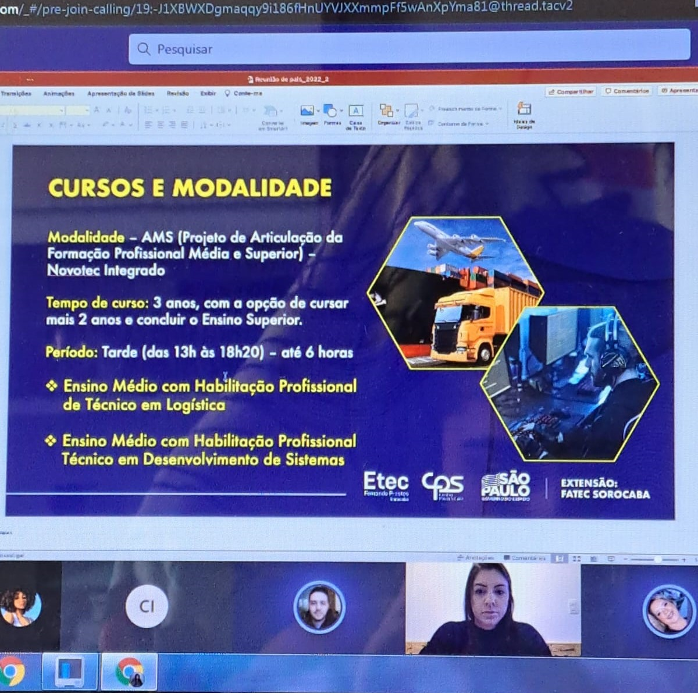Aconteceu uma reunião com as representantes das corporações Eduzz e Uno. Durante este encontro, foram entregues lembrancinhas de cada empresa, como gesto de boas vindas e em comemoração ao primeiro encontro do ano. 13/05/2022
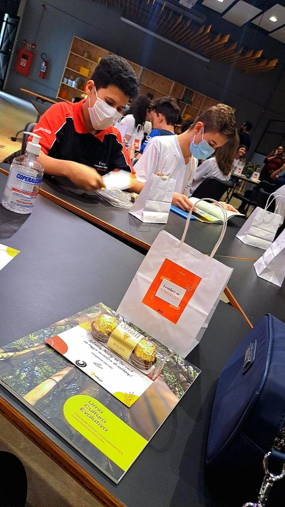Ocorreu uma conferência com a participação das empresas Eduzz, Uno e Tegra, na qual foi discutido um tópico de considerável importância: A solidariedade. 30/09/2022

2ºANO
Uma conferência foi liderada pelo proprietário da empresa Itix, explorando assuntos relacionados à companhia. 04/05/2023
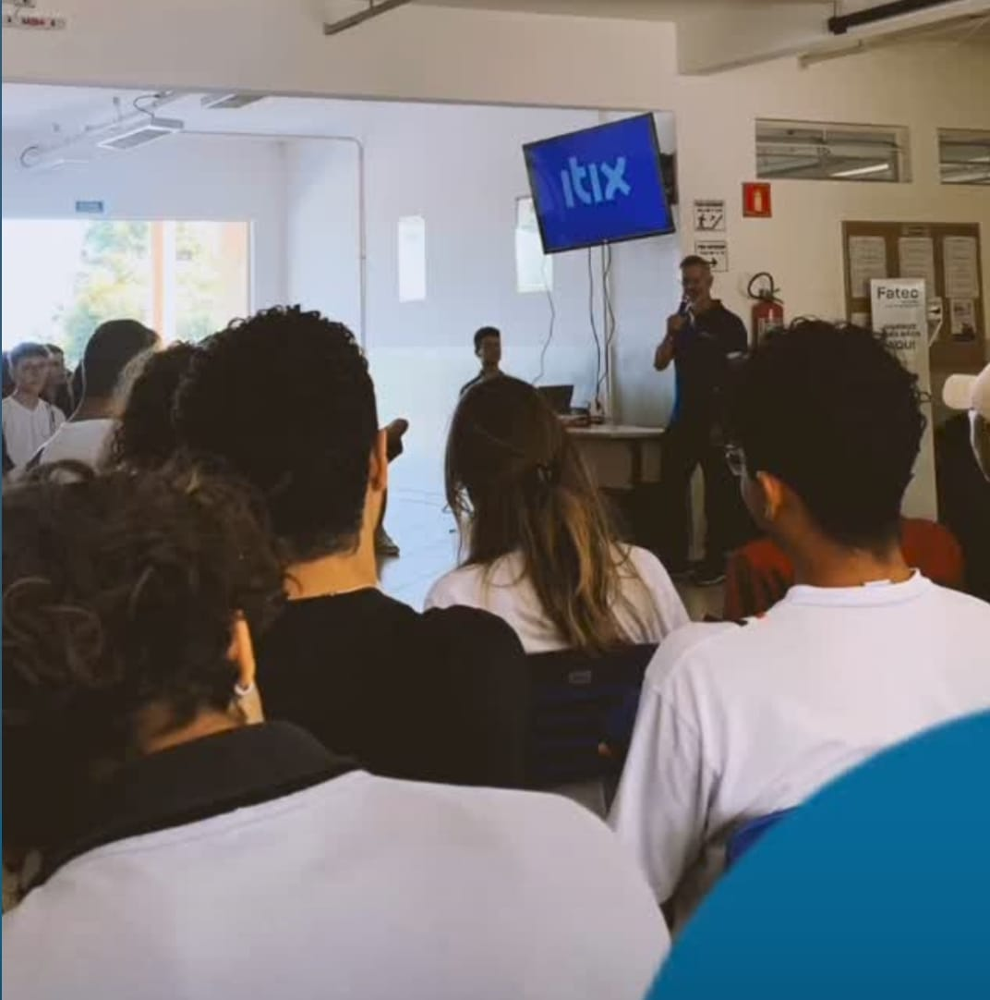Uma apresentação foi conduzida por uma representante da empresa Itix, abordando pormenorizadamente os tópicos relativos à tecnologia e à inteligência artificial. 05/05/2023

Participamos de um workshop com um representante da empresa Itix, onde implementamos a metodologia Ágil em um projeto sobre Reciclagem. Adquirimos habilidades para colaborar em equipe de maneira mais ágil e eficaz e estamos utilizando esses aprendizados em nossos projetos em andamento 13/11/2023.
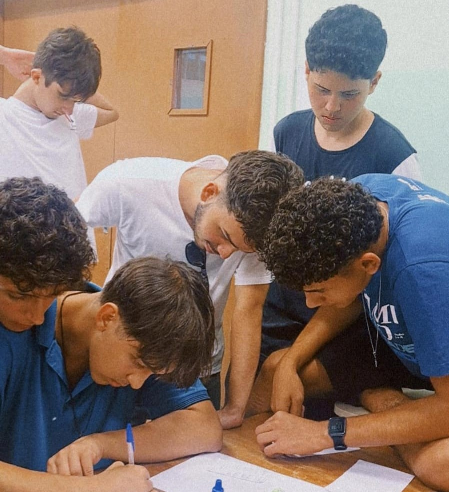3ºANO
Dia 08/04/2024, ocorreu a palestra com o representante da Empresa Itix, com o tema "Criatividade e Inovação:Um Desafio Constante"
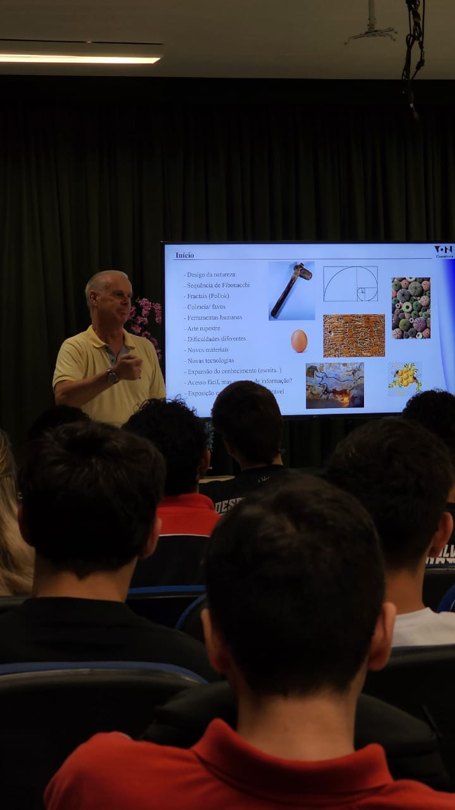Dia 23/05/2024, foi realizada uma palestra na Etec Fernando Prestes, ministrada por Guilherme Bastos, da empresa Tegra. O tema abordado foi "As possibilidades da IA no mercado de trabalho"
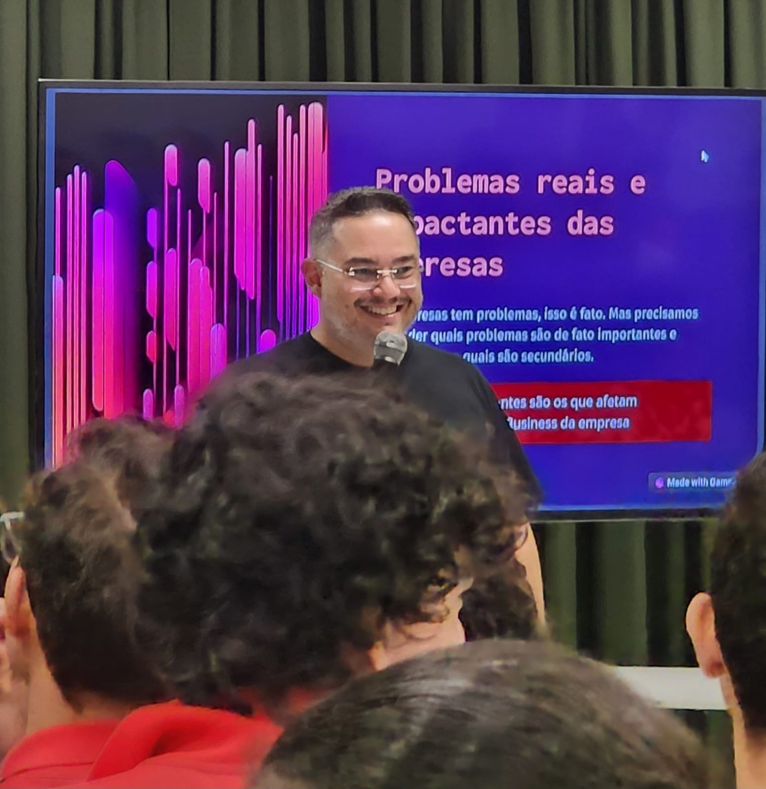Dia 27/05/2024, a Eduzz organizou uma palestra online ministrada por Victor Palencia, que abordou o tema "Liderança e Gestão 3.0"
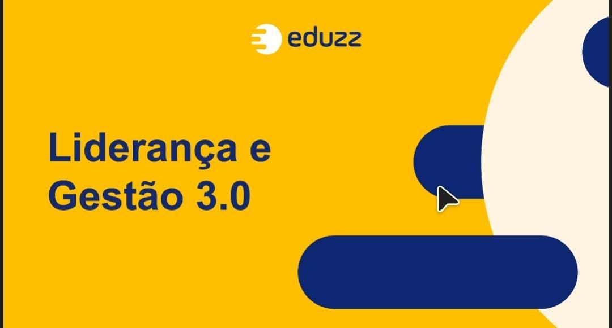Dia 18/06/2024, ocorreu a palestra com os estagiarios da empresa Itix, logo em seguida no mesmo dia outra palestra, com o tema "Explorando Homelabs: Como criar seu próprio ambiente de desenvolvimento pode transformar sua carreira em TI"
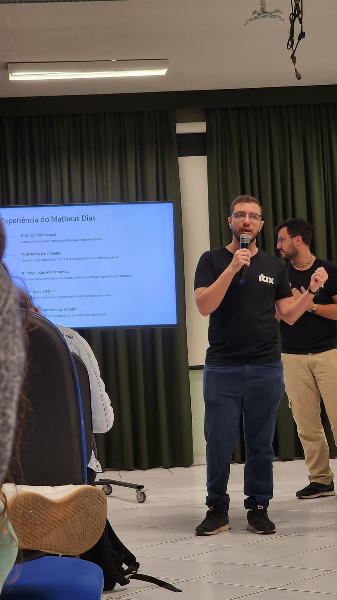Dia 31/07/24 tivemos uma palestra on-line com a empresa Eduzz ministrada pelo Luiz Milagres, com o tema "Hacker do bem e a segurança digital no dia-a-dia"

Dia 28/08/24 tivemos uma palestra da empresa Eduzz ministrada pelos palestrantes Vinicius e Michele, com o tema "Você é uma pessoa organizada?"

Dia 29/08/24, assistimos a uma palestra da empresa Uno com o tema: 'Fluxo de Operações Comercial', ministrada pelos palestrantes André Lopes e Tamiris Marciano.

Dia 05/09/24, assistimos a uma palestra da empresa Tegra com o tema: 'Quais as tendências da área de TI com a virada da IA Generativa e outras tecnologias', ministrada pelo palestrante Guilherme Bastos.
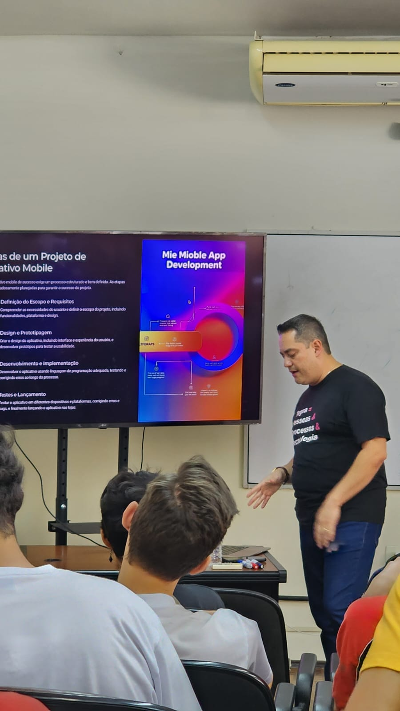Dia 19/09/24, assistimos a uma palestra da empresa Uno com o tema: 'Ingressando no mercado de Trabalho - Autoconhecimento e Marca Pessoal ', ministrada pela palestrante Liliane Pereira
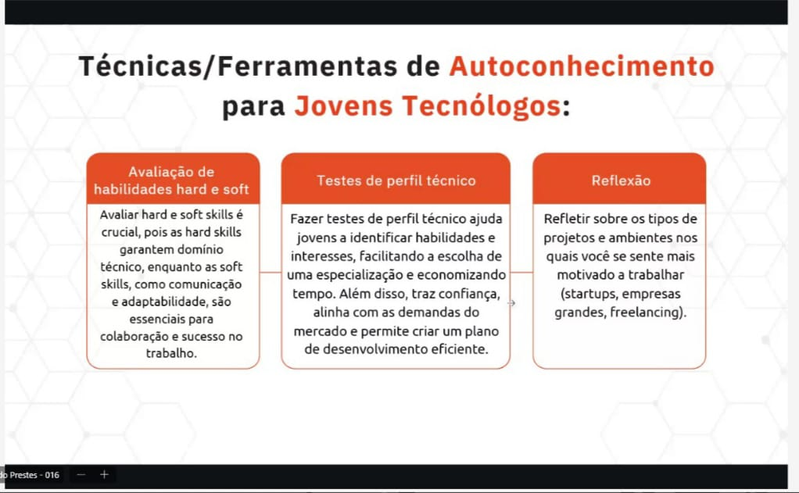Dia 24/09/24, assistimos a uma palestra da empresa Eduzz com o tema: 'Capricho: skill cada vez mais raro no Mercado', ministrada pelo palestrante Luiz Milagres
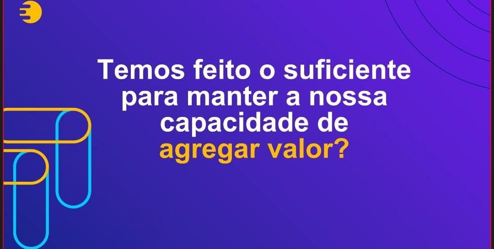Dia 17/10/24, assistimos a uma palestra da IOCHPE pelo Youtube com o tema: 'Educação', ministrada pela palestrante Flavia Freitas .
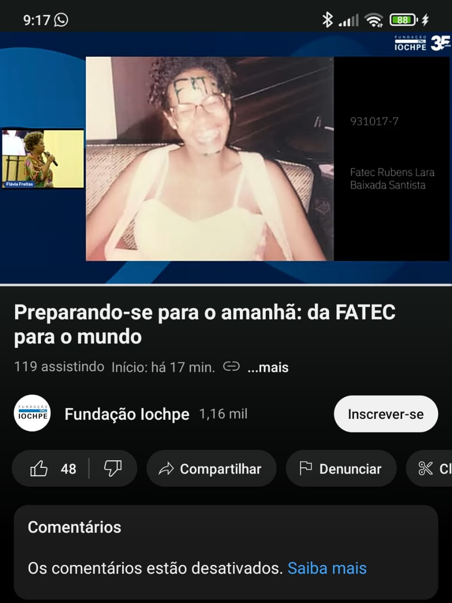CERTIFICADOS
Certificado de conclusão do curso Inova
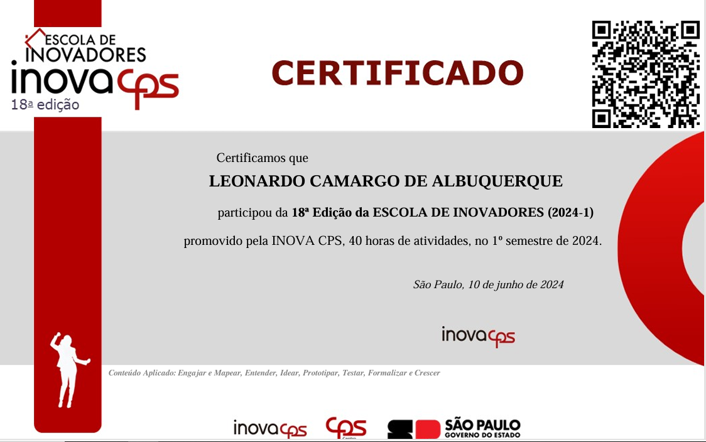